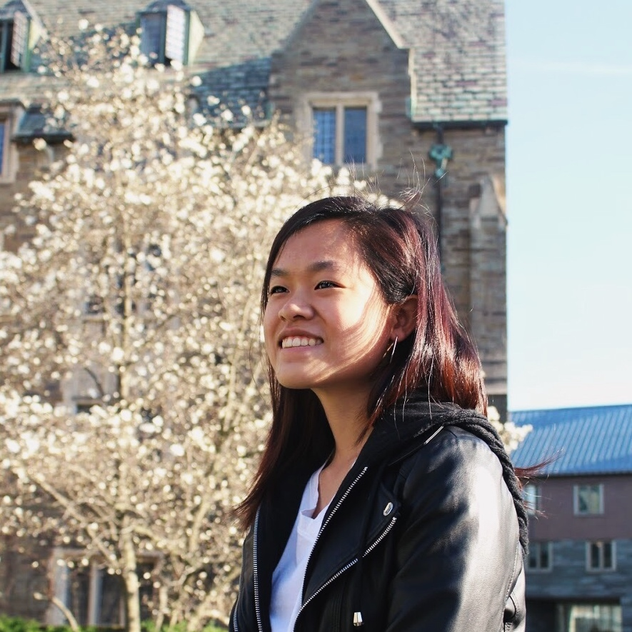

Hello! I'm Emily.
I'm a junior at Cornell University majoring in Information Science with a minor in Creative Writing.
I'm passionate about creating, whether it be arranging music, writing stories, or more recently, web design! As a Cornell Milstein Scholar investigating the intersection of technology and humanities, I'm eager to improve my design and coding skills and learn how technological design can have social impact.
My current and past projects focus on improving education for students young and old, and I hope to continue to contribute in that area. I'm also a major music nerd--always looking for opportunities to beatbox or compose!
You can reach me at etk48@cornell.edu or at one of the links below!
